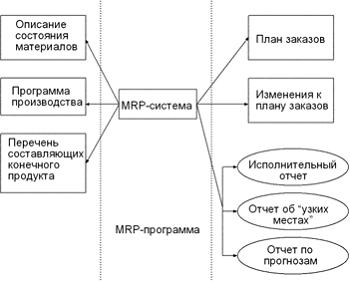
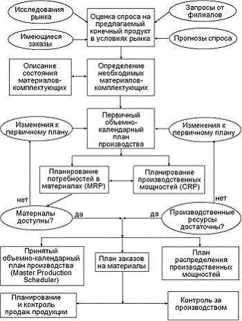
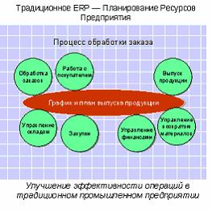
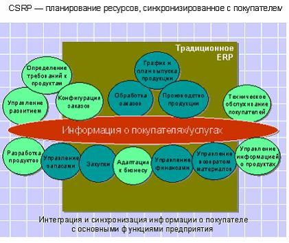

Классификация информационных систем
Классы КИС
Корпоративные информационные системы можно также разделить на два класса: финансово-управленческие и производственные.
Финансово-управленческие системы включают подкласс малых интегрированных систем. Такие системы предназначены для ведения учета по одному или нескольким направлениям (бухгалтерия, сбыт, склад, кадры и т.д.). Системами этой группы может воспользоваться практически любое предприятие.
Системы этого класса обычно универсальны, цикл их внедрения невелик, иногда можно воспользоваться «коробочным» вариантом, купив программу и самостоятельно установив ее на ПК.
Финансово-управленческие системы (особенно системы российских разработчиков) значительно более гибкие в адаптации к нуждам конкретного предприятия. Часто предлагаются «конструкторы», с помощью которых можно практически полностью перестроить исходную систему, самостоятельно или с помощью поставщика установив связи между таблицами БД или отдельными модулями.
Производственные системы (также называемые системами производственного управления) включают подклассы средних и крупных интегрированных систем. Они предназначены в первую очередь для управления и планирования производственного процесса. Учетные функции, хотя и глубоко проработаны, играют вспомогательную роль, и порой невозможно выделить модуль бухгалтерского учета, так как информация в бухгалтерию поступает автоматически из других модулей.
Эти системы функционально различны: в одной может быть хорошо развит производственный модуль, в другой - финансовый. Сравнительный анализ систем такого уровня и их применимости к конкретному случаю может вылиться в значительную работу. А для внедрения системы нужна целая команда из финансовых, управленческих и технических экспертов. Производственные системы значительно более сложны в установке (цикл внедрения может занимать от 6 - 9 месяцев до полутора лет и более). Это обусловлено тем, что система покрывает потребности всего предприятия, и это требует значительных совместных усилий сотрудников предприятия и поставщиков программ.
Производственные системы часто ориентированы на одну или несколько отраслей и/или типов производства: серийное сборочное (электроника, машиностроение), мелкосерийное и опытное (авиация, тяжелое машиностроение), дискретное (металлургия, химия, упаковка), непрерывное (нефтедобыча, газодобыча).
Специализация отражается как в наборе функций системы, так и в существовании бизнес - моделей данного типа производства. Наличие встроенных моделей для определенного типа производства отличает производственные системы друг от друга. У каждой из них есть глубоко проработанные направления и функции, разработка которых только начинается или вообще не ведется.
Также различают виды КИС, такие как заказные (уникальные) и тиражируемые КИС.
Под заказными КИС обычно понимают системы, создаваемые для конкретного предприятия, не имеющего аналогов и не подлежащие в дальнейшем тиражированию.
Подобные системы используются либо для автоматизации деятельности предприятий с уникальными характеристиками либо для решения крайне ограниченного круга специальных задач.
Тиражируемые (адаптируемые) КИС. Суть проблемы адаптации тиражируемых КИС, т.е. приспособления к условиям работы на конкретном предприятии в том, что в конечном итоге каждая КИС уникальна, но вместе с тем ей присущи и общие, типовые свойства. Требования к адаптации и сложность их реализации существенно зависят от проблемной области, масштабов системы. Даже первые программы, решавшие отдельные задачи автоматизации, создавались с учетом необходимости их настройки по параметрам.
MRP -системы
Задача планирования потребностей в материалах (Materials Requirements Planning, MRP) оказалась той первой задачей, которая привела к созданию целой индустрии программного обеспечения для управления предприятием. Решение задачи планирования потребностей в материалах реализуется с помощью алгоритма, который также носит название MRP-алгоритма.
MRP-алгоритм - это алгоритм оптимального управления заказами на готовую продукцию, производством и запасами сырья и материалов.
MRP-методология - это реализация MRP-алгоритма с помощью компьютерной системы.
Реализация системы, работающей по этой методологии представляет собой компьютерную программу, позволяющую оптимально регулировать поставки комплектующих в производственный процесс, контролируя запасы на складе и саму технологию производства. Главной задачей MRP является обеспечение гарантии наличия необходимого количества требуемых материалов и комплектующих в любой момент времени в рамках срока планирования, наряду с возможным уменьшением постоянных запасов, а следовательно разгрузкой склада.
В настоящее время MRP системы присутствуют практически во всех интегрированных информационных системах управления предприятием.
Изначально MRP системы разрабатывались для использования на производственных предприятиях с дискретным типом производства, например:
- Сборка на заказ (Assembly-To-Order, ATO);
- Изготовление на заказ (Make-To-Order, MTO);
- Изготовление на склад (Make-To-Stock, MTS);
- Серийное (RPT).
Основные элементы MRP системы можно разделить на элементы, предоставляющие информацию, программная реализация алгоритмической основы MRP и элементы, представляющие результат функционирования программной реализации MRP.
Материалы - все сырье и отдельные комплектующие, составляющие конечный продукт.
MRP-система, MRP-программа - компьютерная программа, работающая по MRP алгоритму.
Статус материала является основным указателем на текущее состояние материала. Каждый отдельный материал, в каждый момент времени, имеет статус в рамках MRP-системы, например:
- материал есть в наличии на складе;
- материал есть на складе, но зарезервирован для других целей;
- материал присутствует в текущих заказах;
- заказ на материал планируется.
Как видно, статус материала отражает степень готовности этого материала быть пущенным в производственный процесс.
Страховой запас (safety stock) материала необходим для поддержания процесса производства в случае возникновения непредвиденных и неустранимых задержек в его поставках.
Различают понятия полной потребности в материале, которая отображает то количество, которое требуется пустить в производство, и чистой потребности, при вычислении которой учитывается наличие всех страховых и зарезервированных запасов данного материала. Заказ в системе автоматически создается по возникновению отличной от нуля чистой потребности.
Формула вычисления чистой потребности такова:
Чистая потребность = полная потребность - инвентаризовано на руках - страховой запас - зарезервировано для других заказов
На рис. 2 показаны входные и выходные параметры для MRP-системы.

Рисунок 2 - Входы и выходы MRP-системы
Основные операции
На основании входных данных MRP система выполняет следующие основные операции:
- на основании ОПП определяется количественный состав конечных изделий для каждого периода времени планирования ;
- к составу конечных изделий добавляются запасные частей, не включенных в ОПП;
- для ОПП и запасных частей определяется общая потребность в материальных ресурсах в соответствии с ВМ и составом изделия с распределением по периодам времени планирования;
- общая потребность материалов корректируется с учетом состояния запасов для каждого периода времени планирования ;
- осуществляется формирование заказов на пополнение запасов с учетом необходимых времен опережения.
Выходные данные
Результатами работы MRP системы являются:
- план-график снабжения материальными ресурсами производства - количество каждой учетной единицы материалов и комплектующих для каждого периода времени для обеспечения ОПП.
Для реализации плана-графика снабжения система порождает план-график заказов в привязке к периодам времени, который используется для размещения заказов поставщикам материалов и комплектующих или для планирования самостоятельного изготовления.
- изменения плана-графика снабжения - внесение корректировок в ранее сформированный план-график снабжения производства .
- ряд отчетов, необходимых для управления процессом снабжения производства .
CRP - система планирования производственных мощностей
Одной из составляющих интегрированных информационных систем управления предприятием класса MRP является система планирования производственных мощностей (CRP).
Основной задачей системы CRP является проверка выполнимости ОПП с точки зрения загрузки оборудования по производственным технологическим маршрутам с учетом времени переналадки, вынужденных простоев, субподрядных работ и т.д.
Входные данные для CRP - план-график производственных заказов и заказов на поставку материалов и комплектующих. Выходные данные - график загрузки оборудования и рабочего персонала.
Основные функции MRP систем
MRP-система в целом :
- описание плановых единиц и уровней планирования ;
- описание спецификаций планирования ;
- формирование основного производственного плана графика .
MRP-подсистема:
- управление изделиями (описание материалов, комплектующих и единиц готовой продукции);
- управление запасами;
- управление конфигурацией изделия (состав изделия);
- ведение ведомости материалов;
- расчет потребности в материалах;
- формирование MRP заказов на закупку;
- формирование MRP заказов на перемещение.
CRP-подсистема:
-рабочие центры (описание структуры производственных рабочих центров с определением мощности) ;
-машины и механизмы (опсание производственного оборудования с определением нормативной мощности) ;
-производственные операции, выполняемые в привязке к рабочим центрам и оборудованию ;
-технологические маршруты, представляющих последовательность операций, выполняемых в течение некоторого времени на конкретном оборудовании в определенном рабочем центре расчет потребностей по мощностям для определения критической загрузки и принятия решения.
Состав систем класса MRPII (Manufacturing Resource Planning)
Очевидно, на любом производственном предприятии существует набор стандартных принципов планирования, контроля и управления функциональными элементами. Такими элементами являются производственные цеха, функциональные отделы, аппарат руководства и т.д. Давайте на основании этих принципов, попытаемся создать замкнутую логическую систему, которая позволяет отвечать на следующие тривиальные вопросы:
- Что мы собираемся производить?
- Что для этого нужно?
- Что мы имеем в данный момент?
- Что мы должны получить в итоге?
Таким образом, MRPII-система должна состоять из следующих функциональных модулей:
- Планирование развития бизнеса (Составление и корректировка бизнес-плана) ;
- Планирование деятельности предприятия ;
- Планирование продаж ;
- Планирование потребностей в сырье и материалах ;
- Планирование производственных мощностей ;
- Планирование закупок ;
- Выполнение плана производственных мощностей ;
- Выполнение плана потребности в материалах ;
- Осуществление обратной связи .
Схематический план работы MRPII-системы можно отобразить диаграммой, приведенной на рис. 3.

Рисунок 3 - Схематический план работы MRPII-системы
Модуль планирования развития бизнеса определяет миссию компании: её нишу на рынке, оценку и определение прибылей, финансовые ресурсы. Фактически, он утверждает, в условных финансовых единицах, что компания собирается произвести и продать, и оценивает, какое количество средств необходимо инвестировать в разработку и развитие продукта, чтобы выйти на планируемый уровень прибыли. Таким образом, выходным элементом этого модуля является бизнес-план.
Модуль планирования продаж оценивает (обычно в единицах готового изделия), какими должны быть объем и динамика продаж, чтобы был выполнен установленный бизнес-план. Изменения плана продаж, несомненно, влекут за собой изменения в результатах других модулей.
Модуль планирования производства утверждает план производства всех видов готовых изделий и их характеристики. Для каждого вида изделия в рамках выпускаемой линии продукции существует своя собственная программа производства. Таким образом, совокупность производственных программ для всех видов выпускаемых изделий, представляет собой производственный план предприятия в целом.
Модуль планирования потребности в материалах (или видах услуг - "здесь и далее") на основе производственной программы для каждого вида готового изделия определяет требуемое расписание закупки и/или внутреннего производства всех материалов комплектующих этого изделия, и, соответственно, их сборку.
Модуль планирования производственных мощностей преобразует план производства в конечные единицы загрузки рабочих мощностей (станков, рабочих, лабораторий и т.д.) Модуль обратной связи позволяет обсуждать и решать возникающие проблемы с поставщиками комплектующих материалов, дилерами и партнерами. Тем самым, этот модуль собственно и реализует знаменитый "принцип замкнутой петли" (Closed loop principle) в системе. Обратная связь особенно необходима при изменении отдельных планов, оказавшихся невыполнимыми и подлежащих пересмотрению.
Преимущества использования систем MRPII
Применение систем MRP-II позволяет:
- улучшить обслуживание заказчиков - за счет своевременного исполнения поставок;
- сократить цикл производства и цикл выполнения заказа - следовательно, бизнес будет более гибко реагировать на спрос ;
- сократить незавершенное производство - работа не будет выдаваться, пока не потребуется "точно ко времени" для удовлетворения конечного спроса;
- значительно сократить запасы, что позволит более экономно использовать складские помещения и потребуется меньше средств на его хранение;
- сбалансировать запасы - будет меньше дефицита и меньше устаревших запасов;
- повысить производительность - людские ресурсы и материалы будут использоваться в соответствии с заказами с меньшими потерями; можно использовать анализ "что-если", чтобы проверить, соответствует ли производство задачам предприятия по получению прибыли;
- создать скоординированную группу управления, которая сможет решать стратегические и оперативные вопросы и организовать работу в соответствии с выработанным основным планом производства.
Определение ERP
Основные понятия производственного менеджмента (в том числе и термин «ERP») можно считать вполне устоявшимися. В этой области признанным «стандартом де-факто» служит терминология Американской ассоциации по управлению запасами и производством (American Production and Inventory Control Society, APICS). Основные термины и определения приводятся в Словаре APICS, который регулярно обновляется по мере развития теории и практики управления. Именно в этом издании содержится наиболее полное и точное определение ERP-системы.
В соответствии со Словарем APICS, термин «ERP-система» (Enterprise Resource Planning - Управление ресурсами предприятия) может употребляться в двух значениях.
ERP-система - информационная система для идентификации и планирования всех ресурсов предприятия, которые необходимы для осуществления продаж, производства, закупок и учета в процессе выполнения клиентских заказов.
ERP методология - это методология эффективного планирования и управления всеми ресурсами предприятия, которые необходимы для осуществления продаж, производства, закупок и учета при исполнении заказов клиентов в сферах производства, дистрибьюции и оказания услуг.
Таким образом, термин ERP может означать не только информационную систему, но и соответствующую методологию управления, реализуемую и поддерживаемую этой информационной системой.
Характеристические черты ERP-систем
Главная цель концепции ERP - распространить принципы MRPII (Manufactory Resource Planning, планирование производственных ресурсов) на управление современными корпорациями. Концепция ERP представляет собой надстройку над методологией MRPII. Не внося никаких изменений в механизм планирования производственных ресурсов, она позволяет решить ряд дополнительных задач, связанных с усложнением структуры компании.
Концепция ERP до сих пор не стандартизована. Когда возникает вопрос об отнесении конкретной информационной системы управления к классу развитых MRP II-систем или к классу ERP, специалисты расходятся во мнениях, поскольку выделяют различные критерии принадлежности системы классу ERP. Однако, суммируя различные точки зрения, можно указать основные черты, которыми должны обладать ERP-системы.
Системы класса ERP отличает набор следующих свойств:
- универсальность с точки зрения типов производств;
- поддержка многозвенного производственного планирования;
- более широкая (по сравнению с MRPII) сфера интегрированного планирования ресурсов;
- включение в систему мощного блока планирования и учета корпоративных финансов;
-внедрение в систему средств поддержки принятия решений.
Сравнение ERP и MRPII
ERP-системы создаются для больших многофункциональных и территориально распределенных производственных корпораций (например, холдингов, ТНК, ФПГ и т. д.). MRPII-системы ориентированы на рынок средних предприятий, которым не требуется вся мощность ERP-систем.
Существенные же отличия ERP от MRP II можно выразить следующей формулой:
ERP = MRPII + реализация всех типов производства + интегрирование планирования ресурсов по различным направлениям деятельности компании + многозвенное планирование
Безусловно, многие MRPII-системы развиваются с позиций глубины планирования и по некоторым параметрам приближаются к ERP-системам. Однако "по некоторым" не значит "по всем", поэтому с употреблением термина "ERP" нужно обращаться осторожно.
В то же время среди ERP, MRPII-систем не все могут предложить решения по системе планирования и управления производством процессного типа.
CRM
Управление отношениями с клиентами (Customer Relations Management, CRM) - это стратегия, основанная на применении таких управленческих и информационных технологий, с помощью которых компании аккумулируют знания о клиентах для выстраивания взаимовыгодных отношений с ними.
Подобные отношения способствуют увеличению прибыли, т. к. привлекают новых клиентов и помогают удержать старых.
CRM - это клиент-ориентированная стратегия, с одной стороны, формирования наценки «выше рыночной» за счет обеспечения индивидуального обслуживания каждого клиента, а с другой - ориентации на долгосрочные отношения, в том числе и в ущерб краткосрочным экономическим задачам. Обе стороны «CRM-медали» требуют создания и поддержания долгосрочных отношений с клиентами на качественно более высоком, чем простая декларация «клиент всегда прав», уровне. Целью CRM является не просто увеличение объема продаж, а прибыльное «увязывание» потребностей клиента с возможностями продавца, что и требует совместной коллективной работы на клиента различных функциональных подразделений организации.
Основное отличие CRM-систем от всех остальных информационных систем предприятия состоит в следующем. Прочие системы (ERP, документооборот) минимизируют расходы и/или «наводят порядок», а значит, работают на экономичность и экономию (снижение цены покупки), тогда как CRM-системы призваны наращивать эффективность бизнеса: отбором правильных клиентов и корректным выстраиванием отношений с первого раза.
CSRP (Customer Synchronized Resource Planning)
Системы класса CRM зачастую интегрируют с системами управления предприятием (такими как MRPII, ERP), однако даже такое детальное ведение всей маркетинговой информации может не дать того эффекта, который ожидается со стороны топ-менеджмента предприятия.
Более современной концепцией управления ресурсами предприятия является CSRP (customer synchronized resource planning, планирование ресурсов, синхронизированное с клиентом), захватывающая почти весь жизненный цикл товара. Такой подход позволяет на порядок точнее управлять стомостью товара, учитывая производство, продвижение и обслуживание товара данного типа, и учитывать все элементы его функционального жизненного цикла, а не только производства, как во всех стандартных системах предыдущих поколений.
Сущность концепции CSRP состоит в том, что при планировании и управлении компанией можно и нужно учитывать пожелания конечных пользователей непосредственно при оформлении заказа, т. е. ориентироваться в большей степени на производство индивидуальных конфигураций товаров «под заказ».
Такой подход дает большие преимущества в конкурентоспособности предприятия в отраслях, где жизненный цикл товара невелик, и требуется оперативно реагировать на изменение желаний потребителя.
Исключительно важным следствием данной концепции явилась реализация задачи тонкого управления производственными графиками в условиях ограниченных мощностей (так называемой APS задачи - Advanced planning and scheduling - расширенного управления производственными графиками). Автономные решения такого класса были известны и раньше, однако в систему управления ресурсами предприятия впервые были интегрированы фирмой SYMIX в ее продукте SyteLine. Системы типа APS позволяют решать такие задачи, как «проталкивание» срочного заказа в производственные графики, распределение заданий с учетом приоритетов и ограничений, перепланирование с использованием полноценного графического интерфейса. Благодаря принципиально новой «математике» расчет типовых задач MRP осуществляется значительно быстрее, чем раньше.
Отличия между ERP и CSRP подходами показаны на рис. 4 и 5 (рисунки приводятся из источника).

Рисунок 4 - Традиционання ERP - система

Рисунок 5 - CSRP - планирование ресурсов, синхронизированное с покупателем
Примеры КИС
Современный рынок информационных управленческих систем состоит из тройки (по другим оценкам - пятерки) систем-лидеров, которые, собственно, и относятся к классу ERP, и множества "продвинутых" систем класса MRPII.
Безусловными лидерами ERP являются системы SAP R/3 немецкой компании SAP AG, Oracle Applications американской компании Oracle и Baan, разработанная нидерландской компанией Baan (в мае 2000 года компания Baan была приобретена британским холдингом Invensys). Иногда к этому "элитному" списку добавляют OneWorld компании J.D.Edwards и PeopleSoft, выпускаемую одноименной компанией.
Что же касается MRPII-систем, то тут наблюдается большее количество решений, каждое из которых несет в себе уникальное сочетание функциональных и технологических особенностей. Все они отличаются различной степенью проработки производственных, финансовых и иных функций, поэтому с помощью консультантов предприятия могут подобрать систему, более всего отвечающую их запросам. Поэтому "MRPII" - это не признак ущербности системы, а показатель того, что система ориентирована на рынок средних предприятий.
CRM-продукты, предлагаемые западными поставщиками, можно классифицировать по семи основным категориям:
- SFA (Sales Force Automation) - автоматизация деятельности торговых представителей;
- МА (Marketing Automation) - автоматизация деятельности маркетинга;
- CSA, CSS (Customer Service Automation, Customer Service Support) - автоматизация службы поддержки и обслуживания клиентов;
- Call/Contact Center Management - центры обработки вызовов, контакт-центры;
- Field Service Management - управление территориально удаленными подразделениями или пользователями;
- PRM (Partner Relationship Management) - управление взаимоотношениями с партнерами (не поставщиками, а элементами товаропроводящей сети, разделяющими риски);
- Help Desk - техническая поддержка пользователей.
Компания SYMIX в 2000 году предложила на рынке комплекс программных продуктов, реализующих уровень CSRP.